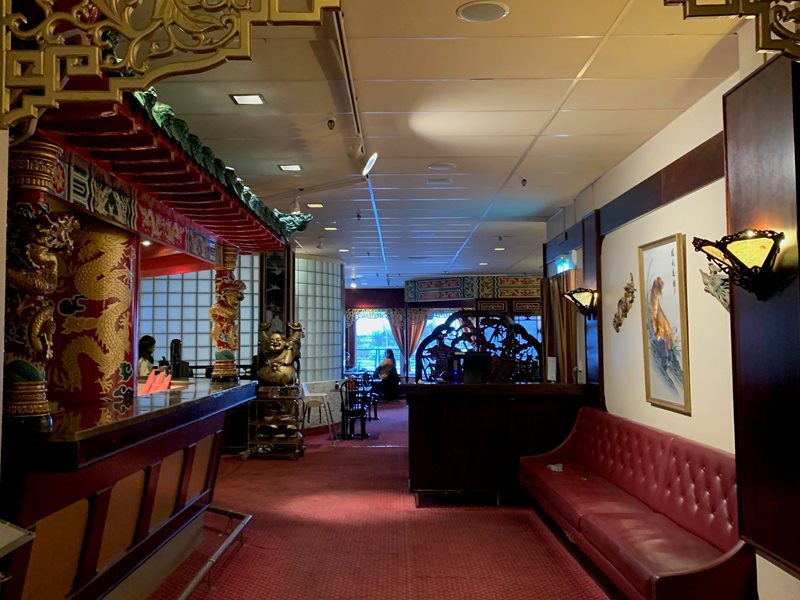

Lunch
Lunchbuffé med ca 14 rätter från det asiatiska köket, plus dagens husmanskost (mån–fre). Även som take away.
Familjen Kuos restaurang sedan 1985
Om oss
1980 kom familjen Kuo till Luleå, och 1985 öppnade Jung Fu och Yng Hsia Kuo dörrarna till Waldorf. Idag drivs restaurangen vidare av deras söner – en av Luleås äldsta restauranger, mitt i centrum.
Familjens rötter i södra Kina och åren i Indien lever kvar i maten: hakka-kinesiskt kök möter indiska influenser och smakar av hela Asien. Filosofin är enkel – alla ska kunna mötas kring bordet, oavsett smak. Därför serverar vi kinesiskt, japanskt, kött & fisk och pizza, dag efter dag.
Meny
Varje dag serverar vi en lunchbuffé med rätter från hela Asien – och kvällstid väljer du fritt mellan fyra olika kök.
Öppettider
| Måndag – Torsdag | 11.00–14.00, 16.00–21.00 |
|---|---|
| Fredag | 11.00–14.00, 16.00–22.00 |
| Lördag | 12.00–22.00 |
| Söndag | 12.00–21.00 |
Lunch serveras mån–fre 11.00–14.00 samt lör–sön 12.00–15.00.

Kontakt
Ring oss eller boka online – vi ser fram emot ditt besök.